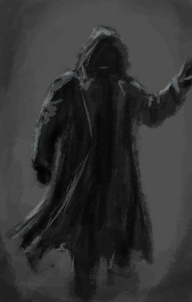

"Барьер" - группировка является скрытой, на контакты не выходит.
Группировка, скорее напоминающая религиозную секту. Её члены верят, что Центр Зоны только их территория.
Большинство сталкеров презирают бойцов "Барьера" считая их «помешанными». Со времени своего образования
группа препятствует продвижению сталкеров к Центру Зоны, мотивируя это недобрыми намерениями. По слухам, у
"Барьера" есть крупная база где-то ближе к Центру Зоны, но точного её расположения не знает никто, кроме
самих членов группировки.